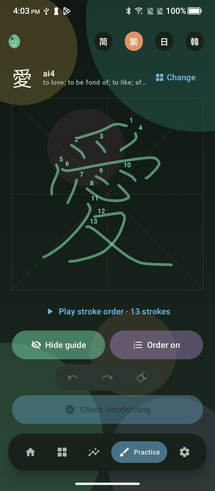
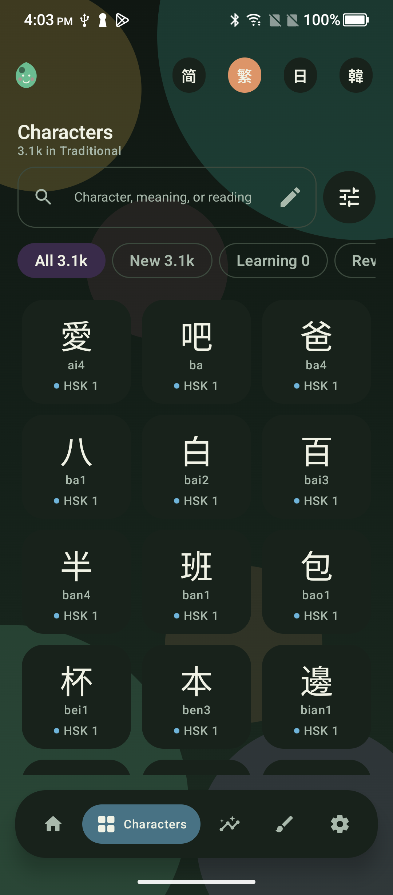
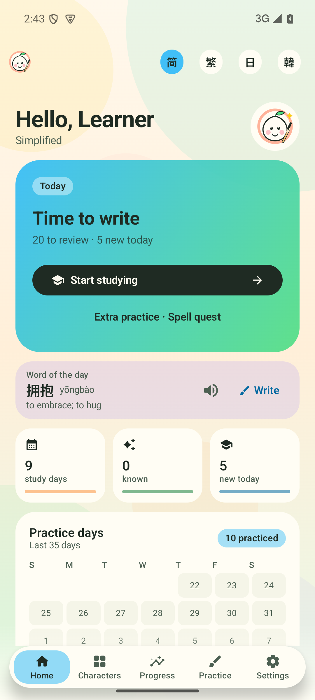

◷
FSRS-7 chooses the date
Bihua contains a direct FSRS-7 implementation: long-term stability, short-term stability, item difficulty, and a target retrievability. It solves for the next interval instead of using fixed boxes.
Bihua is a writing app for Chinese, Japanese, and Korean characters. FSRS-7 chooses the date. The ink you actually drew gets checked on the device. The final grade stays with you.

The app has two jobs: decide when a character comes back, and tell you what your hand did. Bihua does both on the device, with code you can read.
Bihua contains a direct FSRS-7 implementation: long-term stability, short-term stability, item difficulty, and a target retrievability. It solves for the next interval instead of using fixed boxes.
ML Kit Digital Ink runs locally and returns candidates. A separate stroke comparison measures count, coverage, order, reversals, missing strokes, and start error. Recognition is evidence; it never presses the grade button.
The handwriting model downloads to the device. Progress lives in SQLite. Backups are zips you create. There is no account to sign into and no study history leaving the phone.
The shipped model uses 34 parameters. Each card keeps two stabilities and a difficulty estimate. The interval is solved numerically at a 90% retention target, capped at 365 days. Again, Hard, Good, Easy are the only inputs.
A guide-aware comparison reports stroke count, average distance from the reference, reversed strokes, strokes out of order, missing or extra strokes, and the first useful correction. It is a heuristic, and the UI says so.
A review does not show the character and ask you to recognise it. You get a cue, an empty canvas, and a guide that fades as the character becomes familiar. After the attempt, the app shows what it can verify. You still choose the grade.
The canvas gets the space. The schedule, dictionary, and ink evidence stay close without taking over.




Simplified and Traditional are separate lists. Shared glyphs stay shared. Traditional words come from CEDICT word pairs, not a character-by-character converter. Korean Hanja uses Unihan; the unlicensed Hanjaro data is gone.
Counts are course entries, not unique glyphs. Shared characters such as 日 and 人 appear in more than one course.
The content database is generated from open sources and shipped with the checksums. The app code is MIT. The data keeps its own licences.
No Hanjaro. No Korean word examples either, because that source had no redistribution grant. The Korean course is characters only. Full notices.
Install Bihua 1.0.2 on an Android 10+ arm64 phone. Write one character a day, or ten. The schedule will still be there when you come back.
APK · signed release · 38 MB · content version 19 · no account